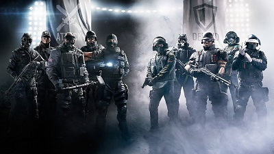

Questa pagina é dedicata ai Video Giochi, una passione che é nata quando da bambino, passavo i pomeriggi interi a guardare i miei fratelli giocare.
A quei tempi, i miei fratelli giocavano principalmente sulla Play-Station 2, e giochi principali erano Spyro e Spider-Man. Ed é proprio grazie a
quei pomeriggi passati ad osservare i miei fratelli a giocare a questi giochi, che mi sono appassionato del mondo videoludico e dei super-eroi.
Ma qualche anno piú tardi, uscí la prima console a cui abbia mai giocato, la Play-Station 3.
In contemporanea, uscí il gioco che mi ha fatto innamorare di quella serie di Video Game, Assassin's Creed Revelation, che mi ha poi portato a giocarmi
a tutti i vecchi titoli, e poi a comprare tutti i nuovi titoli fino ad oggi.
Peró il mioo gioco preferito di quella serie, é stato Assassin's Creed Valhalla: gioco che é riuscito ad unire due miei interessi comuni, i giochi e la storia
dei vichinghi.
Ma la capacitá di questo videogioco, é quella di esser riuscita ad avvicinare me, come migliaia e migliai di altre persone, alla storia: ambientando
i propri titoli in vari periodi storici, come per esempio la rivoluzione francese, quelle industriali, nel rinascimento e nel mondo antico, come
quello egiziano, greco e romano.
I giochi che mi hanno tenuto compagnia durante tutto il corso della quarantena, e che mi hanno permesso anche di rimanere in contatto con moolti dei miei amici,
sono stati League of Legends e Rainbow Six Siege.
In League of Legends ogni giocatore, controlla un Campione, ovvero un personaggio che possiede delle abilità speciali.
Come in ogni gioco del genere MOBA, lo scopo principale è percorrere il campo di gioco e distruggere la struttura obiettivo nella base della squadra avversaria.
Durante lo svolgimento della partita, ogni giocatore deve guadagnare livelli e oro dall'uccisione dei Campioni e minions avversari e sconfiggendo i mostri neutrali,
alcuni dei quali alla morte garantiscono dei potenziamenti detti Buff.
Con l'oro guadagnato è possibile acquistare degli oggetti da equipaggiare al fine di migliorare le statistiche del proprio Campione.
Il Campione inizia la partita al livello 1 e può raggiungere al massimo il livello 18. Ogni passaggio di livello, oltre a migliorare le
statistiche complessive del Campione, permette di potenziare di un grado una delle quattro abilità disponibili. Inoltre è presente anche un livello relativo
all'account del giocatore, il quale permette di sbloccare bonus aggiuntivi, quali incantesimi dell'evocatore e rune.
In Rainbow Six Siege un massimo di 10 giocatori divisi in 2 squadre. Sono presenti due bombe in due stanze differenti adiacenti della mappa dove gli attaccanti dovranno convergere per poi disinnescarle tramite un disinnescatore, posseduto da uno dei membri della squadra. I difensori avranno il compito di eliminare tutti gli attaccanti per permettere alle bombe di esalare i gas. Se il disinnescatore dovesse essere piazzato, il ruolo dei difensori è quello di distruggere il disinnescatore attraverso uno speciale strumento. In questa modalità, è possibile vincere uccidendo tutti i giocatori avversari.
